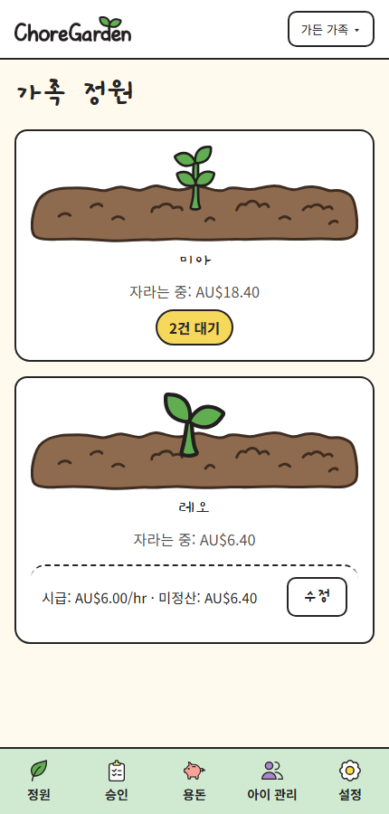
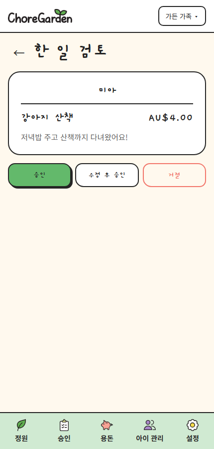
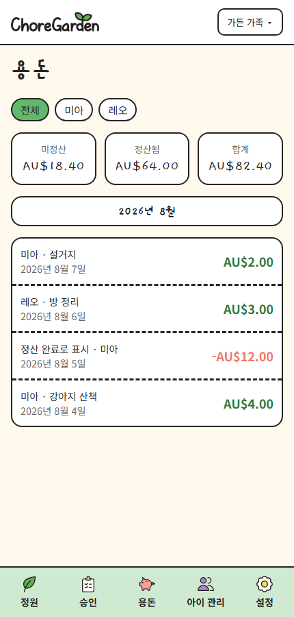
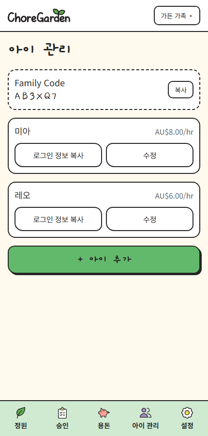
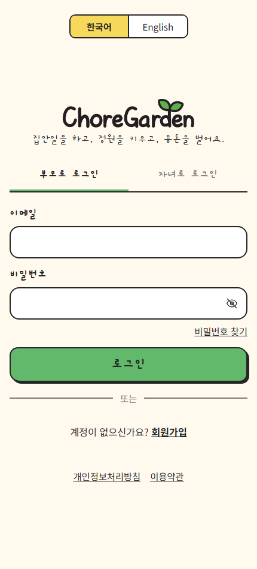
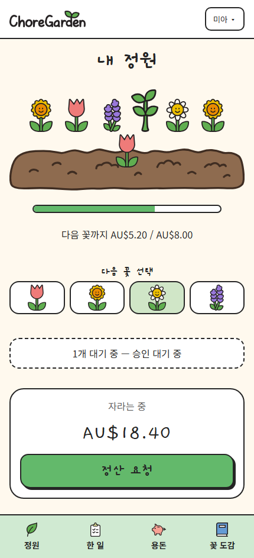
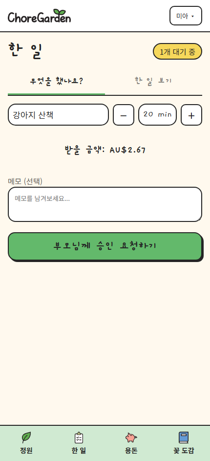
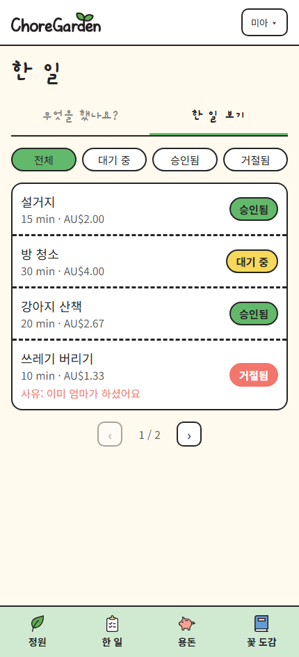
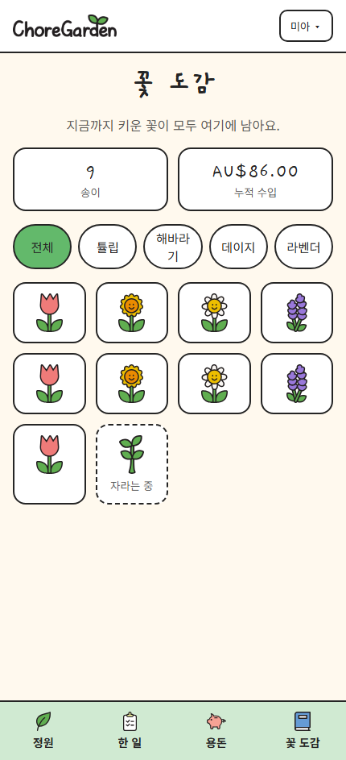

아이가 한 일을 올리면 부모님이 승인하고, 그만큼 정원에 꽃이 피어납니다. 용돈이 눈에 보이는 성장으로 바뀌어요. Children log what they did, parents approve it, and the garden grows. Allowance becomes something you can actually see.
설치 없이 브라우저에서 바로 · 한국어 / English · AUD · KRW · USDRuns in the browser, no install · English / 한국어 · AUD · KRW · USD
기록하고, 승인하고, 꽃이 피고, 용돈을 받습니다.Log it, approve it, watch it bloom, then cash it in.
무엇을 했는지 쓰고 걸린 시간을 고르면 받을 금액이 바로 보여요.Write what you did, pick the minutes, and see what you'll earn.
그대로 승인하거나, 시간을 조정해서 승인하거나, 사유와 함께 거절할 수 있어요.Approve as-is, adjust the time first, or decline with a reason.
승인된 금액만큼 씨앗이 싹이 되고, 줄기가 되고, 꽃이 됩니다.Approved earnings turn a seed into a sprout, a stem, then a flower.
언제든, 매주 금요일, 꽃이 필 때, 또는 정해진 금액에 도달했을 때.Anytime, every Friday, when a flower blooms, or at a set amount.
부모님은 관리하고, 아이는 자신의 정원을 가꿉니다.Parents manage the family. Children tend their own garden.
선택한 언어 그대로 앱이 보여집니다.The app shows up in whichever language you pick.









승인된 용돈이 쌓일수록 정원이 한 단계씩 자랍니다.Each approved chore moves the garden one stage further.
다음에 피울 꽃은 아이가 직접 고르고, 꽃 도감에 차곡차곡 모입니다.Kids pick what blooms next, and the Flower Book keeps them all.
통화, 회계연도, 정산 방식까지 가족의 방식대로.Currency, financial year, and payout rules — your household, your rules.
호주 달러, 원화, 미국 달러 중에서 고르면 앱 전체에 적용됩니다.Pick AUD, KRW, or USD and it applies everywhere in the app.
언제든 / 매주 금요일 / 꽃이 필 때 / 정해진 금액 도달 시 중 선택.Anytime, every Friday, when a flower blooms, or at a threshold.
1–12월, 호주식 7–6월, 또는 직접 지정한 시작 월로 집계합니다.Calendar year, Australian July–June, or a custom start month.
아이마다 다른 시급과 PIN. 가족 코드 하나로 모두 연결됩니다.Different rates and PINs per child, all under one family code.
새로운 집안일 요청과 정산 요청을 놓치지 않게 알려드려요.Get told about new chore requests and payout requests.
한국어와 영어를 언제든 전환할 수 있어요. 이중언어 가정에 딱 맞습니다.Switch between English and Korean anytime — built for bilingual homes.
아니요. 부모님이 만든 가족 코드와 아이 PIN만 있으면 로그인할 수 있어요.No. Kids sign in with the family code you create plus their own PIN.
아니요. ChoreGarden은 기록하고 계산해 주는 도구입니다. 실제 지급은 가족이 직접 하고, 앱에서 정산 완료로 표시하면 됩니다.No. ChoreGarden tracks and calculates. You hand over the money however you already do, then mark it as paid.
수정 후 승인을 누르면 시간을 조정한 뒤 승인할 수 있고, 사유를 적어 거절할 수도 있어요.Use adjust and approve to change the minutes first, or decline with a short reason.
아니요. 지금까지 키운 꽃은 모두 꽃 도감에 남아 누적 수입과 함께 기록됩니다.Never. Every flower stays in the Flower Book alongside total earnings.
가족 코드를 만들고 아이를 추가하면 바로 시작할 수 있어요.Create a family code, add a child, and you're ready to go.